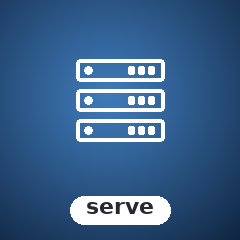

Demos.
VHS-recorded GIFs of every example shipped with the library. Regenerated automatically on every push that touches the source.

Config inspection
Resolved server config — name, host, ports, repo dir.

Self-hostable Git server over SSH + Git + HTTP
Self-hostable Git server with SSH (authorized keys), Git (git://), and HTTP endpoints. Users, repos, access control, and optional LFS — all driven by a config file.
composer require sugarcraft/candy-serveuse SugarCraft\Serve\{Config, Repo, SSH\SSHServer};
// Load config
$config = Config::fromDefaults();
// Create a repo
$repo = Repo::create($config, 'my-project');
echo "Repo path: {$repo->path()}\n";
// Spawn the SSH server
$server = new SSHServer($config);
$server->listen();VHS-recorded GIFs of every example shipped with the library. Regenerated automatically on every push that touches the source.